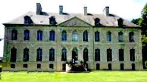
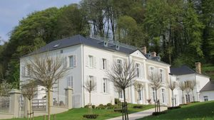

Recensement Jean-Claude Truffet


| Département | 80 — Somme |
| Canton | Albert |
| Commune | Louvencourt |
| Type d'édifice | Château |
| Période d'origine | XVIII |
| Coordonnées GPS | 50° 11' 52,89" Nord, 2° 24' 36,45" Est |
LOUVENCOURT, au Moyen Age, il existait déjà à Louvencourt un château qui se trouvait a peu près a l'emplacement actuel de la cour de l'école communale. Il appartenait alors à une famille qui portait le nom de sa terre, les Louvencourt. A cette maison de Picardie on doit rattacher, en particulier, Charles de Louvencourt qui fut mayeur d'Amiens en 1567. Le château, tel qu'il se présente aujourd'hui, fut édifié au milieu du XVIIIe siècle, en même temps que l'église, pour la famille de Lestocq dont descend l'épouse du propriétaire actuel M. le Sellier de Chezelles. Il s'agit d'une demeure très simple, aux allures de grande maison de campagne, construite entièrement en pierre sur un soubassement en grès. Elle se compose essentiellement d'un corps de logis de plan rectangulaire dont l'élévation est à deux étages couverts d'un toit d'ardoise percé, sur la façade principale, de trois lucarnes. Dans le prolongement de ce corps de logis furent ajoutées, un peu plus tard, deux petites ailes sans étage, coiffées d'un toit à la Mansart. Au début du règne de Louis XV, Charles-Antoine de Lestocq est seigneur de Louvencourt, il occupait la charge de trésorier de France, c'est à lui que l'on attribue généralement la construction du château, voisin de l'église dont le clocher porte la date de 1740, l'actuel corps de logis serait plutôt l'oeuvre de son fils Nicolas-Charles, capitaine d'infanterie au régiment de Mailly et chevalier de Saint-Louis, il épousa Marie-Jeanne Demazures de Florimont en 1753, il fixa sa résidence habituelle à Louvencourt où il fut inhumé en 1777 sous une grande pierre gravée du choeur de l'église. Sa fille Marie-Victoire épousa Jean-Jacques-Guislain du Val de Nampty, son voisin de Bus-les-Artois.
LOUVENCOURT, son fils Charles-René-Victoire-Damien mourut à Louvencourt en 1817. Héritière du domaine Angélique de Lestocq l'apporta en mariage à Antoine Serpette de Berseaucourt.
Leur fils Edouard fut maire de la commune, avec son épouse Léontine de Valicourt, ils parrainèrent la cloche de l'église. Georges Serpette de Berseaucourt leur succéda et mourut en 1897. Le domaine est entré par alliance dans la famille de Thélin. Le château a subi des dommages en 1914-1918, il fut occupés par les troupes alliées. Les propriétaires actuels sont M. Le Sellier de Chezelles et son épouse, descendante de la famille de Lestocq. A cinq k.M. au nord AUTHIE, le fief d'Authie existe déjà dans les années 800, il relève du monastère de Saint-Riquier. Il semble qu'Authie soit donné par Charlemagne au duc Angilbert, abbé de Saint-Riquier. Le premier château semble dater du IXe siècle. Après l'An 1000 la châtellenie d'Authie devient une possession du seigneur de la Ferté. Sa situation géographique explique l'importance stratégique du château d'Authie, détruit au XVIe siècle, en représailles par les huguenots, qui n'avaient pu se rendre maîtres de Doullens. Le château actuel ne sera reconstruit que sous le règne de Louis XV. Les Seigneurs d'Authie exercent le droit de haute, moyenne et basse justice. Dans leur fonction de seigneurs justiciers ils sont entourés d'officiers auxquels ils délèguent leurs compétences. Il possède une salle de justice où se tiennent les audiences et auditions. Les cas qui ne sont pas de la compétence du bailli qui exerce la justice en lieu et place du seigneur, sont déférés au bailliage d'Amiens et les appels au Parlement de Paris.
famille de Lestocq"
Louvencourt_GPS : 50° 11' 52,89" Nord, 2° 24' 36,45" Est